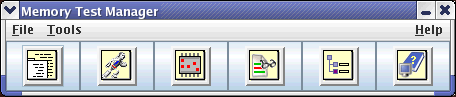

Starting the Memory Test Manager
Before you begin
MTP must be installed.
Procedure
Results
The Memory Test Manager window opens:

What to do next
To start any of the MTP tools, click the corresponding icon.
Note Before you use a
MTP tool, make sure you have done the following checks:
-
Your account have been authorized to execute /etc/profile.d/ mtp_execution_engine.sh.
-
$V93000_TM_LIBRARY_PATH has contained the path /opt/93000mts/mts/execution_engine/UTM/sh_lib/.
Functional changes
- Introduced before SmarTest 6.3.2